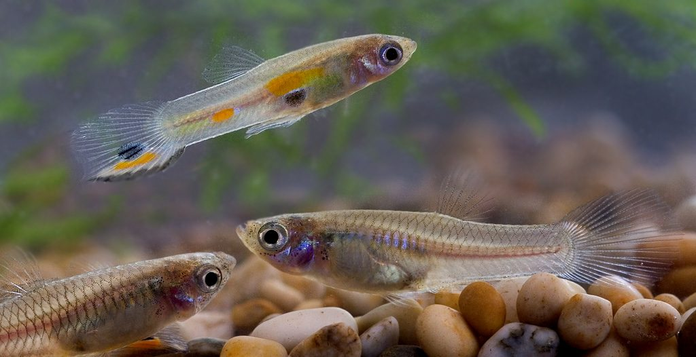

Year 9 Science · Lesson 9
Natural selection in action
Games, simulations and real data


Quick recall
Natural selection: the five steps
Write them down from memory, in order, before the next click.
Lab manual p19
Bear Island: the jelly bear evolution game
- Jelly bears of four colours live on a patterned "island".
- Predators have a few seconds to grab the bears they can see.
- Every surviving bear reproduces: add one more bear of its colour.
- Count each colour and record it. Repeat for five generations.
Your teacher may change the rules. Whatever they are, record every generation in the table on p19.
Lab manual p19 Q2
Which colour survived best?
Explain why, using the idea of natural selection.
- Variation: the bears came in different colours.
- Selection: which colours did the predators miss? Why?
- Reproduction and inheritance: survivors added bears of their own colour.
- Time: what happened to that colour over five generations? Quote your numbers.
Simulation · Lab manual p19 Q3
PhET: Natural Selection
phet.colorado.edu: Natural Selection
- Add a mutation, such as brown fur or long teeth.
- Add a selection factor: wolves, or limited food.
- Run several generations and watch the population graph.
Which trait became more common over several generations, and why?
Real science
Guppies in Trinidad
Male guppies have bright, colourful spots. Females prefer to mate with the most colourful males.
But in some streams live pike cichlids, fish that hunt guppies. Bright spots are easy for them to see.
Above some waterfalls the big predators can't reach. The guppies there are much safer.
In the 1970s and 80s, biologist John Endler studied these streams. The data on the next slides are an example based on his work.
Read the data
Spots on male guppies in a stream with predators
- Which number of spots is most common? 3–5 spots, 14 males.
- Which is least common? 12 or more: no males at all.
- Why might males with lots of spots be rare here? Predators see them more easily, so fewer survive to breed.
Example data based on Endler's guppy studies.
Predict
Some of these guppies are moved above a waterfall, where there are no big predators
Predict how the number of spots on the males will change over many generations.
Explain your prediction using the five steps: variation, selection, reproduction, inheritance, time.
Many generations later
Compare the two streams
The most common group moved from 3–5 spots (14 males) to 6–8 spots (10 males).
Males with 12 or more spots went from 0 to 4.
Without predators, bright males survive. Females choose them, so they have more offspring, which inherit the genes for more spots.
Example data based on Endler's guppy studies.
Generalise · Lab manual p19
The big idea
Natural selection can determine which adaptations are the best at meeting the requirements for MRS C GREN.
With predators, plain colouring helped guppies survive. Without them, bright colouring helped them reproduce. The best adaptation depends on the environment.
Exit question · Lab manual p19
Rewrite the big idea in your own words
Then give an example from Bear Island, PhET or the guppies.
Start with: "The environment decides…"
Away today?
Missed this lesson? Catch up here
- Try the PhET Natural Selection simulation and answer p19 Q3.
- Ask a classmate for their Bear Island results, then answer p19 Q2.
- Work through the guppy slides 6 to 9. Answer the questions on slide 7 and make your prediction on slide 8 before you look at slide 9.
- Exit question: rewrite the big idea in your own words, with an example.